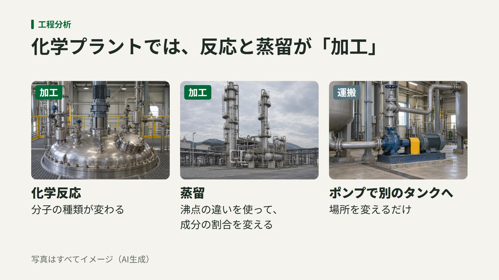

ビデオポッドキャストを本格的に始めました｜解説図を見ながら聴けるように
プラントライフは、エピソードを動画でもお届けする取り組みを本格的に始めました。音声はそのままに、話の流れに合わせて写真や図が切り替わる動画です。まずは#131と#123の動画版を公開しました。

どんな動画か
話している要点を、スライドのような解説図にして音声に重ねています。装置の形や作業の場面など、耳だけでは想像しにくいところを画面で確かめられます。話の内容は音声版と同じなので、音声だけで聴いても楽しめる作りです。
図の写真はAIで作ったイメージで、実在の工場を写したものではありません。画面にも「イメージ（AI生成）」と表示しています。
見られる場所
#131と#123の動画版を見られるのは、次の4つのサービスです。
Amazon Musicでは、これまでどおり音声で配信しています。このサイトのエピソードのページでも、YouTubeのボタンから動画版を開けます。
動画版を公開した回
これから
これまで動画付きの配信は、対談の回など一部だけでした（2026年6月のお知らせ）。今後は新しい回に加えて、過去の回も順次動画版にしていきます。